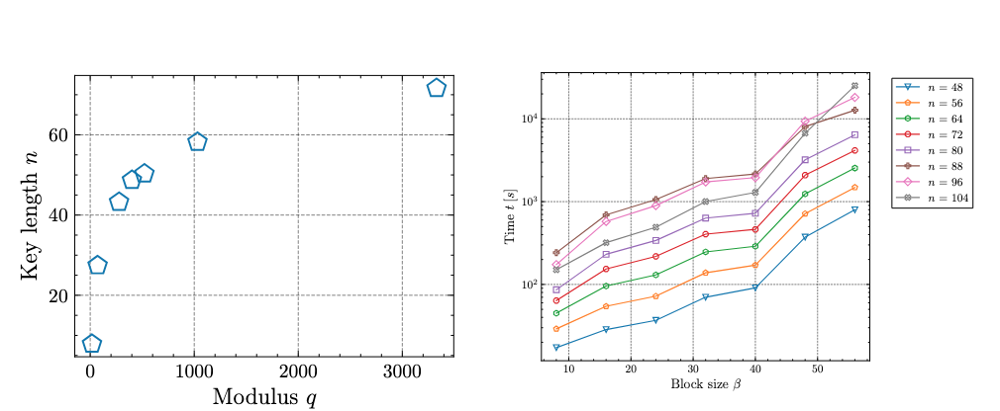
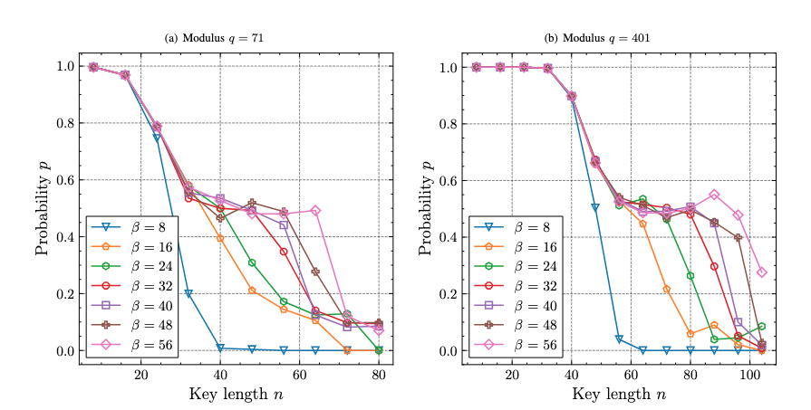

Dynamic analysis of lattice basis reduction algorithms
Analysis of research on lattice-based cryptography schemes, including the security and implementation of Learning With Errors (LWE) and its relationship to NP-hard problems Shortest Vector Problem (SVP) and Closest Vector Problem (CVP). Focused on the mathematics behind the concepts, as well as next steps in my learning journey. My work was done for SIT281, Cryptograpy, and is getting published in the Deakin Mathematics Yearbook of 2025, and is available here. I was able to build off this opprtunity again by working on the AMSI SUmmer Research Project, which I provided a presentation at University Melbourne.
Introduction:
A section I would have loved to include in the book is a little section on LLL and BKZ, for introduction purposes:


Bibliography
Dedication
More people to dedicate it to - any why not.